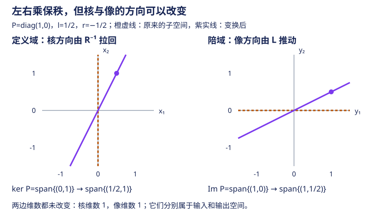

本页目录
高代 III · 矩阵
矩阵在本页完成身份升级：从"方程组的系数表"变成自带代数运算的对象。乘法为什么那样定义、逆矩阵何时存在、分块怎么用、秩的不等式体系——这些是后面一切结构理论（相似、合同、分解）的操作基础。
学习层：同一个矩阵既是映射，也是一张坐标照片
先修与去向：需要行列式与线性方程组中的消元和解空间；抽象解释见下一页线性空间，相似与谱进入特征值。本页默认实数矩阵；涉及除以二的分解与对合例题，在特征二的域上不能照搬。
1. 具体情境：两段设备和两套坐标如何读成同一件事？
想象一个二维流水线：输入向量 \(x\) 先经过设备 \(B\)，再经过设备 \(A\)，输出是 \(A(Bx)\)。如果把设备顺序交换，输出变成 \(B(Ax)\)，通常不同。另一方面，若只更换坐标基，线性映射本身没有换，变的是它的矩阵照片：
实验把两种复合顺序放在同标尺的两幅图中，再用坐标与核像账本核对相似变换和左右初等乘法。这样“矩阵乘法”不会被误读成逐元素乘法，也不会把坐标变换误说成换了物理映射。
2. 揭示前预测：先写下顺序与空间
打开实验前，先回答五个问题：
- \(A\) 与 \(B\) 的复合是否总能交换？
- \(T^{-1}AT\) 是另一个任意映射，还是同一映射在新基下的坐标表示？
- 可逆 \(L\) 左乘 \(M\) 主要对应行变换还是列变换？秩会不会改变？
- 可逆 \(R\) 右乘 \(M\) 主要对应行变换还是列变换？秩会不会改变？
- 对二维定义域，核的维数与像的维数应满足什么总账？
预测时要同时说出“它作用在哪个空间”和“它改变的是哪一组坐标”。同一个数表左乘和右乘，通常不是同一种操作。
3. 正式桥：复合、相似、左右乘与秩-零度
由列向量的线性组合，矩阵乘法满足
所以 \(AB\) 的第 \(j\) 列是 \(A\) 作用在 \(B\) 的第 \(j\) 列上；复合一般不交换；例如同一矩阵的幂、相同基下的两个对角矩阵又可以交换。相似公式 \(T^{-1}AT\) 则来自同一映射在两套基之间的坐标转换。左乘初等矩阵改变行，右乘初等矩阵改变列；当因子可逆时它们都保持秩，但核与像分别受到不同的推送或拉回。
对线性映射 \(A:V\to W\)，秩-零度定理是
这个等式可以从“先补全定义域的基”证明：取核的一组基 \(u_1,\ldots,u_k\)，补成 \(V\) 的基 \(u_1,\ldots,u_k,v_1,\ldots,v_r\)。任意向量的像都由 \(Av_1,\ldots,Av_r\) 张成；若这些像的线性组合为零，对应的 \(v_j\) 组合就落入核，与补全后的基独立性矛盾。因此它们是像的一组基，\(k+r=\dim V\)。这里 \(V\) 有限维。
左右乘到底改变什么？ 对可逆 \(L,R\)，逐个翻译“映成零”和“全部输出”可得
例如 \(LAx=0\iff Ax=0\)，因为可以左乘 \(L^{-1}\)；而 \(ARx=0\iff Rx\in\ker A\)，所以核被 \(R^{-1}\) 拉回。\(R\) 可逆意味着 \(Rx\) 遍历整个定义域，所以右乘不改变像。它们都保维数，具体方向却可能改变。
实验采用
输入两坐标在 \([-2,2]\)，\(t,l,r\in[-1,1]\)。\(A,B\) 可从投影 \(P=\operatorname{diag}(1,0)\)、剪切 \(S=\begin{pmatrix}1&0.8\\0&1\end{pmatrix}\)、缩放 \(D=\operatorname{diag}(1.5,0.5)\)、交换 \(J=\begin{pmatrix}0&1\\1&0\end{pmatrix}\) 中选择。
取 \(A=P\)，则
秩仍为一，但 \(r\) 转动核方向、\(l\) 改变像方向。注意核在输入空间，像在输出空间，不能把它们画在同一个平面上就默认是同一类对象。

换基的复算闭环： 先算 \(x_{\rm new}=T^{-1}x\)，再算 \(y_{\rm new}=(T^{-1}AT)x_{\rm new}\)，最后还原 \(Ty_{\rm new}=Ax\)。只对比 \(A\) 与 \(T^{-1}AT\) 的元素是否相同，不能判断物理映射是否改变。也不能把同一个旧坐标数列直接塞进新矩阵，却仍声称输入向量没有变。
JavaScript 失效时的静态 fallback：取 \(A\) 为投影到 \(x\) 轴，\(B\) 为水平剪切，输入 \(x=(1,1)\)。
| 路径或对象 | 静态读数 | 读法 |
|---|---|---|
| \(Ax\) | \((1,0)\) | 投影压掉 y 方向 |
| \(Bx\) | \((1.8,1)\) | 先剪切再读输出 |
| \(A(Bx)\) | \((1.8,0)\) | 对应 \(AB\)，先 B 后 A |
| \(B(Ax)\) | \((1,0)\) | 对应 \(BA\)，本例与 \(AB\) 不同 |
| \(A\) 的秩、核维数、像 | \(1,1,\operatorname{span}\{(1,0)\}\) | 核维数加像维数等于 2 |
| \(T^{-1}AT\) | \(t=0.5\) 时为 \(\begin{pmatrix}1&0.5\\0&0\end{pmatrix}\) | \(x_{\rm new}=(0.5,1)\)，输出新坐标 \((1,0)\)，还原仍是 \(Ax\) |
4. 定理与失败边界
- 映射边界：矩阵是选定基下的坐标表示，不是脱离定义域、陪域和基的“裸对象”；\(AB\) 与 \(BA\) 甚至可能尺寸不同，方阵也通常不交换。
- 左右乘边界：左乘对应行组合，右乘对应列组合。可逆因子保秩不等于核和像作为具体子空间都原封不动；它们会随所在空间的变换而变化。
- 秩-零度边界：\(\dim\ker A+\dim\operatorname{Im}A=\dim V\) 需要把像看作陪域中的子空间、把核看作定义域中的子空间；有限样例不能替代这个量词完整的定理。
- 相似边界：\(T^{-1}AT\) 只描述可逆换基下的同一线性变换。任意两个矩阵都不因“看起来像”就相似。
- 实验边界：SVG 只画一个二维输入和有限组预设；它能暴露顺序差异，却不能由一条轨迹证明所有向量、所有维数上的矩阵恒等式。
5. 迁移练习：一条轨迹能证明矩阵相等吗？
- 取 \(A=P,B=S\)。给一个非零输入使 \(ABx=BAx\)，同时证明 \(AB\ne BA\)。
- 取 \(A=P,t=1,x=(1,2)^\top\)。求输入、输出的新坐标，再还原输出；说明若误把旧数列 \((1,2)\) 当作新坐标会发生什么。
- 取 \(A=P,l=1/2,r=-1/2\)。求 \(LAR\)、核和像；给出一个非零核向量，并给一个能产生输出 \((2,1)^\top\) 的输入。
展开三道迁移题答案
- 取 \(x=(1,0)^\top\)，两条路径都得到 \((1,0)^\top\)。但 \(AB=\begin{pmatrix}1&0.8\\0&0\end{pmatrix}\)、\(BA=\begin{pmatrix}1&0\\0&0\end{pmatrix}\)，对输入 \(e_2\) 分别得到 \((0.8,0)^\top\) 和零。矩阵相等必须对所有输入成立；检验一组定义域基已足够，一条任意轨迹不够。
- \(x_{\rm new}=(-1,2)^\top\)，新矩阵 \(C=\begin{pmatrix}1&1\\0&0\end{pmatrix}\)，所以 \(y_{\rm new}=(1,0)^\top\)，还原后仍是 \(Ax=(1,0)^\top\)。若把旧数列当新坐标，会得到 \(C(1,2)^\top=(3,0)^\top\)；它实际上对应旧输入 \(T(1,2)^\top=(3,2)^\top\)，已经换了输入。
- \(LAR=\begin{pmatrix}1&-1/2\\1/2&-1/4\end{pmatrix}\)，核为 \(\operatorname{span}\{(1/2,1)^\top\}\)，像为 \(\operatorname{span}\{(1,1/2)^\top\}\)。直接相乘验证核向量被映成零；输入 \((2,0)^\top\) 产生 \((2,1)^\top\)。所有产生该输出的输入还可加上任意核向量。
账本中的秩按已知映射与可逆因子的结构给出；显示的小数是近似值。把这些小数重新当作精确数据输入软件，可能得到一个不同的矩阵：微小舍入甚至会把秩一矩阵变成精确满秩矩阵。此时需要结合误差尺度讨论数值秩，不能用新数据推翻原映射的代数结论。类似地，数值行列式下溢成零也不等价于数学上不可逆。
1. 运算与乘法的本质
加法、数乘逐元素；乘法 \((AB)_{ij} = \sum_k a_{ik}b_{kj}\)。为什么这样定义？因为矩阵乘法 = 线性映射的复合（高代 IV 将正式建立；先记住这个视角，乘法的一切"怪癖"都由它解释）：
- 一般不交换：存在 \(AB\ne BA\) 的例子；相同矩阵及同阶对角矩阵可以交换，不能把“不满足交换律”读成“每一对都不交换”；
- 有零因子：\(A,B\) 都非零也可能 \(AB=0\)，如 \(P=\operatorname{diag}(1,0)\) 与 \(I-P\) 的乘积为零；不能消去：\(AB = AC \nRightarrow B = C\)（左消去只需 \(A\) 满列秩，即 \(\ker A=\{0\}\)；方阵时这才等价于可逆）；
- 结合律、分配律成立；\((AB)^\top = B^\top A^\top\)（穿衣脱衣顺序）。
方阵幂与多项式：\(A^k\)、\(f(A) = a_n A^n + \cdots + a_0 I\)；同一矩阵的多项式彼此交换——这一小事实是高代 V 里 Cayley–Hamilton 与最小多项式理论的操作基础。
特殊矩阵速查：对角、数量矩阵 \(kI\)（与一切同阶方阵交换，且只有它们如此）、上/下三角（乘积保持三角）、对称 \(A^\top = A\) / 反对称 \(A^\top = -A\)（任意方阵 = 对称 + 反对称的唯一分解 \(A = \frac{A + A^\top}{2} + \frac{A - A^\top}{2}\)）、正交矩阵（高代 VI）、幂等 \(A^2 = A\)（沿核投影到像，不必正交；实矩阵还对称时才是正交投影）、幂零 \(A^k = 0\)。
2. 逆矩阵
定义 \(AB = BA = I\) 则 \(B = A^{-1}\)（存在必唯一）。
定理（可逆判别大集合） 对 \(n\) 阶方阵，以下等价：\(A\) 可逆 \(\iff \det A \neq 0 \iff \mathrm{rank}\,A = n \iff Ax = 0\) 只有零解 \(\iff\) 行（列）向量组线性无关 \(\iff A\) 可写成初等矩阵之积 \(\iff\) 0 不是 \(A\) 的特征值。这张等价清单是线性代数的"中枢神经"，各页概念在此汇合，值得整体背诵。
求逆两法：伴随法 \(A^{-1} = \frac{1}{\det A}\mathrm{adj}(A)\)（理论用、\(2\times2\) 速算 \(\begin{pmatrix} a&b\\c&d\end{pmatrix}^{-1} = \frac{1}{ad-bc}\begin{pmatrix} d&-b\\-c&a\end{pmatrix}\)）；初等变换法 \((A \mid I) \xrightarrow{\text{行变换}} (I \mid A^{-1})\)（实算用）。
性质：\((AB)^{-1} = B^{-1}A^{-1}\)；\((A^\top)^{-1} = (A^{-1})^\top\)；\(\det A^{-1} = (\det A)^{-1}\)。
伴随矩阵补充公式（先取 \(n\ge2\)）：\(\det(\mathrm{adj} A) = (\det A)^{n-1}\)；\(\mathrm{rank}(\mathrm{adj}A) = n / 1 / 0\) 分别对应 \(\mathrm{rank}A = n / n{-}1 / {<}n{-}1\)。\(n=1\) 时按零阶子式为一的约定，\(\operatorname{adj}([a])=[1]\)，单独处理。
3. 分块矩阵
把矩阵按块划分后按相容尺寸做加乘，保持乘法顺序；块矩阵一般不交换。行列式公式中的对角块须为方阵。三个高频武器：
- 分块对角：\(\mathrm{diag}(A_1, A_2)\) 的逆/幂/行列式逐块算，\(\det = \det A_1 \det A_2\)；
- 分块三角：\(\det\begin{pmatrix} A & C \\ 0 & B \end{pmatrix} = \det A \det B\)；
- 打洞（Schur 补）：用块消元处理 \(\begin{pmatrix} A & B \\ C & D\end{pmatrix}\)，\(A\) 可逆时行列式 \(= \det A \cdot \det(D - CA^{-1}B)\)。🔗 Schur 补在数值分析（分块消元）、统计（条件高斯分布的协方差！概率页）中反复出现。
Schur 补公式可以直接由块消元推出，不必硬记：当 \(A\) 可逆时，
左乘因子的行列式为一，右侧是分块上三角，于是得到上述乘积。这里没有交换 \(C,A^{-1},B\) 的顺序。
列/行视角（比元素视角更重要的思维方式）：\(Ax\) = A 的列的线性组合（系数是 \(x\) 的分量）；\(AB\) 的每列 = \(A\) 乘 \(B\) 的对应列。🔗 神经网络每层 \(Wx\) 就该这样读（ai 课 04 讲）。
4. 初等矩阵与等价标准形
初等矩阵 = 单位阵做一次初等变换；左乘 = 行变换、右乘 = 列变换。初等矩阵皆可逆。
定理（等价标准形） 任意 \(m \times n\) 矩阵存在可逆 \(P, Q\)：
——固定矩阵尺寸后，秩是这类左右可逆变换的完全分类不变量：同秩当且仅当等价；其他不变量也可以是秩的函数，不能把“唯一”理解为不存在这样的函数。这是三大标准形（等价/相似/合同）中最粗的一个，后两个分别在高代 V、VI 登场，"变换群越小、不变量越细"的主线由此开始。
5. 秩的不等式体系
加法要求 \(A,B\) 同尺寸；乘法取 \(A\) 为 \(m\times n\)、\(B\) 为 \(n\times p\)，Sylvester 下界里的 \(n\) 是中间空间维数。下面的秩-零度解释也给出证明方法。
| 不等式 | 备注 |
|---|---|
| \(\mathrm{rank}(A + B) \leq \mathrm{rank}A + \mathrm{rank}B\) | |
| \(\mathrm{rank}(AB) \leq \min(\mathrm{rank}A, \mathrm{rank}B)\) | 乘法不增秩 |
| \(\mathrm{rank}(AB) \geq \mathrm{rank}A + \mathrm{rank}B - n\) | Sylvester；\(AB = 0 \Rightarrow \mathrm{rank}A + \mathrm{rank}B \leq n\) |
| \(P, Q\) 可逆 ⇒ \(\mathrm{rank}(PAQ) = \mathrm{rank}A\) | 可逆乘法保秩 |
| \(\mathrm{rank}(A^\top A) = \mathrm{rank}A\) | 实矩阵；最小二乘法方程可解性的依据 |
对 Sylvester 不等式，把 \(A\) 限制在 \(\operatorname{Im}B\) 上：它的核是 \(\ker A\cap\operatorname{Im}B\)，故
🔗 AI 衔接：低秩 = 信息冗余可压缩——LoRA（comfy 课 05 讲 \(\Delta W = BA\)，\(\mathrm{rank} \leq r\)）、推荐系统矩阵分解、模型压缩全部立足于秩的语言。
6. 典型例题
例 1（求逆） \(A = \begin{pmatrix} 1 & 2 & 3 \\ 2 & 5 & 3 \\ 1 & 0 & 8 \end{pmatrix}\)：\((A\mid I)\) 行变换到 \((I \mid A^{-1})\)，得 \(A^{-1} = \begin{pmatrix} -40 & 16 & 9 \\ 13 & -5 & -3 \\ 5 & -2 & -1 \end{pmatrix}\)（验算 \(AA^{-1} = I\) 一次，防手滑）。
例 2（Sylvester 应用） \(A^2 = I\)（对合矩阵），证明 \(\mathrm{rank}(A + I) + \mathrm{rank}(A - I) = n\)。 解：\((A+I)(A-I) = 0\) ⇒ 秩和 \(\leq n\)（Sylvester）；又 \((A+I) - (A-I) = 2I\) ⇒ 秩和 \(\geq \mathrm{rank}(2I) = n\)。两头夹住等号。"乘积为零 + 和为可逆"双夹是这类题的固定拳法。
例 3（分块求逆） \(M = \begin{pmatrix} A & 0 \\ C & B \end{pmatrix}\)（\(A, B\) 可逆），验证 \(M^{-1} = \begin{pmatrix} A^{-1} & 0 \\ -B^{-1}CA^{-1} & B^{-1} \end{pmatrix}\)（按块乘一遍即可；记结构不记公式：对角块取逆，角块"左右夹逆再变号"）。\(\blacksquare\)
7. 原始资料与继续阅读
- MIT：Invariants of Transformations，两端换基与相似变换的坐标推导。
- MIT 18.06：Linear Algebra，消元、列空间、零空间及四个基本子空间的课程资料；本页把核与像放回各自的空间。
下一页离开具体矩阵，进入公理化的世界：线性空间与线性映射——"矩阵是线性映射在基下的照片"这句话将正式成立。